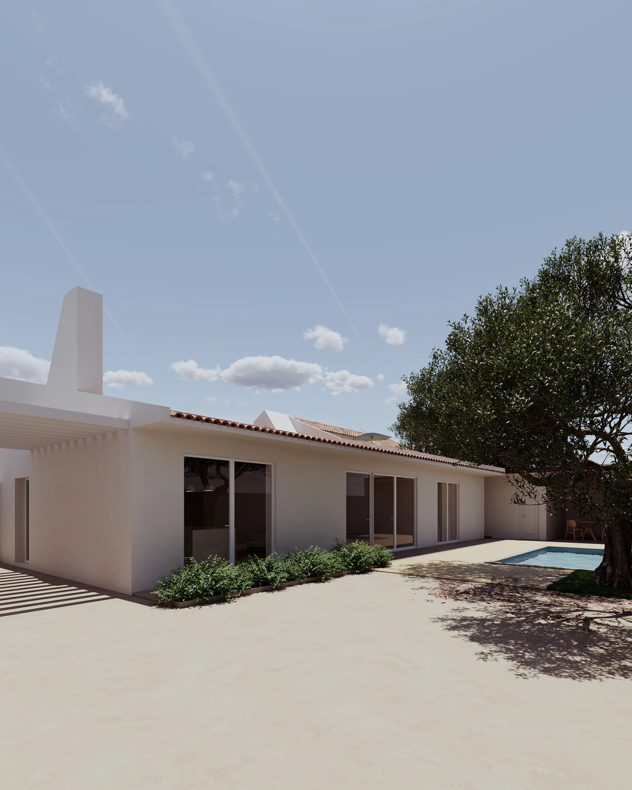

Homes · residential interior
Casa
Adega.
A warm residential interior study built around natural materials, clean volumes and a calm relationship between old character and new intervention.
Project approach
Warmth without
visual noise.
The proposal focuses on proportion, material continuity and custom elements rather than decoration for its own sake. Every intervention is intended to make the space feel simpler, calmer and more resolved.
Create something similar →
Materials
Natural.
Tactile.
Quiet.
Timber tones, textured surfaces and restrained lighting create depth without relying on unnecessary visual effects.